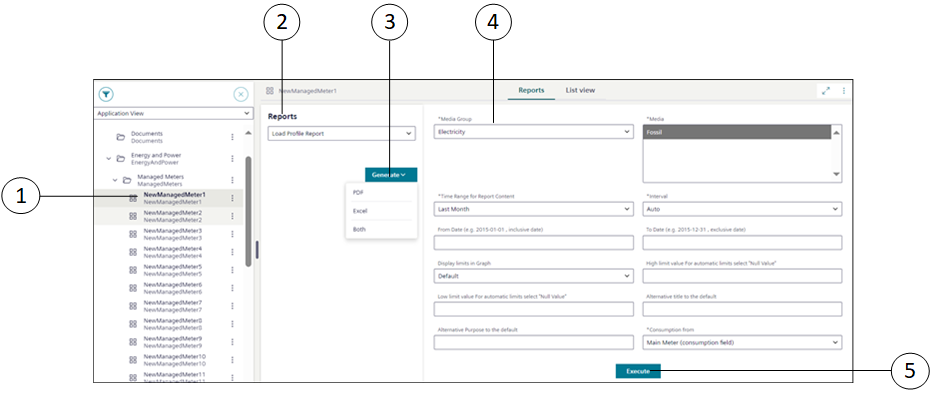

Advanced Reports Execution and Parameter Information Workspace

1 | System Browser objects | - Displays the list of objects in the selected view (Application View, Management View, Logical, Physical, and UserView). - When you select the System Browser object or its child object, on which web application rule is configured the Reports tab is displayed. -To view the Reports tab in Primary pane or in Secondary pane and generate the advanced report from these panes: |
2 | Reports drop-down list | Displays the web application rules configured on the System Browser object. |
3 | Generate | Generates the advanced report output in three formats: |
4 | Parameter information section | - After selecting one of the following formats: PDF, Excel, or Both, the corresponding parameter information section is displayed. |
5 | Execute | After execution, by default, the advanced report is saved at the location: [Installation Drive C]:\[Installation Folder]\[Project Name]\ FlexReports and displays the data as per the specified parameter values. |
Following are the parameters and the description for the [Load Profile Report] report displayed in the parameter information section:
All the parameters that are marked with (*) are mandatory. Without selecting or not entering these mandatory field values, the Execute button is not enabled.
# | Parameters | Description/Value |
1 | *Media Group | Specify the index value of the media group from the Media Group text group. |
2 | *Media | Specify the index value of the media from the Media text group. |
3 | *Time Range from Report Content | Specify the time range for the data to be displayed in the report by specifying the respective values in the Time range for Report Content drop-down list. |
4 | *Interval | Specify the aggregation interval for the report. The values specified for this field depend on the type of report to be executed through the web application rule. |
5 | From Date and To Date | Specify the date range for the report. |
6 | Display limits in Graph | Display limits in Graph can have either of the following values: |
7 | Alternative Title to the default | Specify an alternative title for the advanced report. |
8 | Alternative Purpose to the default | Specify the alternative purpose for the advanced report. |
9 | *Consumption From | Select the meter for which the consumption is to be calculated. You can select either of the following values: |
10 | High limit value For automatic limits select "Null Value | Specify the numeric value for high limit value to display the proper meter readings and graph in the report output. |
11 | Low limit value For automatic limits select "Null Value | Specify the numeric value for low limit value to display the proper meter readings and graph in the report output. |
Similarly, you can create web application rules on any System Browser object or child object and view the Reports tab, parameter information section, and execute other Energy Reports, Pharma Reports, Power Reports, Trend Calculation reports, DMS reports, DI migration reports, and so on.